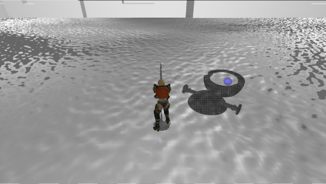

河原電子ビジネス専門学校
ゲームクリエイター科2年 豊岡 大
キャラクターを操作してウェーブ形式で襲い掛かってくる敵を倒すゲームです。
使用ゲームエンジン
学校内製低レベルエンジン(DirectX12製)を改造して制作
使用ツール
Visual Studio 2022
3ds Max 2022(モデリングソフト)
Blender(モデリングソフト)
Adobe Photoshop Elements 2021(ペイントツール)
Medibang Paint Pro(ペイントツール)
Git Hub（バージョン管理ツール）
Notion(タスク管理)
VS Code(この資料の作成）
使用言語
C++
HLSL
開発環境
Windows10
DirectX12
制作人数
1人
プレイヤーは最終段含め五段攻撃をすることが可能でこれらの攻撃中にステップを行うことができ攻撃をキャンセルし敵の攻撃を回避することが出来ます。

Nier:Automataに登場する回避演出のようなものを作りたいと考え、ステップ中に攻撃を受けるとジャスト回避の演出が入り一定時間無敵状態となり、回避状態の際に攻撃をすることも可能です。

物理的に正しいライティングの計算を行うPhysics Base Renderingを実装しています。
物理的に正しいというのは「エネルギー保存の法則」「ヘルツホルムの相反性」に遵守した計算方法でモデルを描画しています。
エネルギー保存の法則は入射してきた光と反射、屈折する光を合算した総量は変わらないという原則。
ヘルツホルムの相反性は光が入射してくる方向と射出する方向が入れ替わっても光の射出量の結果が変わらないという性質です。
これら二つを遵守してモデルのライティング計算を行っています。


通常シーンをオフスクリーンレンダリング後、輝度抽出を行い、
ガウシアンブラーとダウンサンプリングを繰り返して複数枚のテクスチャを作成して、
複数枚のテクスチャの平均を取って加算合成することで光のあふれを表現できるようになっています。
通常シーン

輝度抽出

ガウシアンブラーとダウンサンプリング（これを複数回繰り返す）

加算合成後

敵を倒した後の消滅する表現、ジャスト回避成功時の残像の表現にディザリングによる半透明描画を用いています。
ディザパターンに従って一部のピクセルを描画しないことで半透明であるかのような表現を実現しています。

個人的にトゥーンシェーディングをやってみたいということでエネミーやステージを物理法則に則った描画であるPBRなのに対して主人公のアニメ調のような表現になるトゥーンシェーディングで描画しています。

今回作成したトゥーンシェーダーは、法線とディレクションライトの方向の内積の結果を使用して一定値以下なら最終出力するカラーに0.7などを乗算してアニメ調なはっきりとした影を実装しています。
今回は3諧調にしています。
アニメ調な表現のためには輪郭線が重要だと考えたため、輪郭線描画も行っています。 今回実装した輪郭線はフロントカリングを行ったモデルを法線方向に拡張したものを実装しました。
今回の制作は年末年始も挟んでの制作でタスクが思っていたよりも進まない日が続いてしまった。
-ディゾルブ